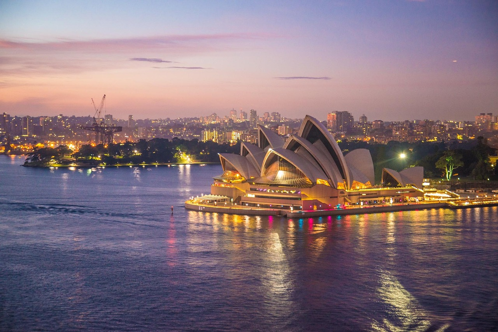

The sixth-largest nation in the world, Australia, is well-known for its breathtaking scenery, varied wildlife, energetic cities, and rich indigenous culture. Australia provides visitors with a wide range of experiences that honor its distinctive past and natural beauties, from the famous Sydney Opera House to the ancient rock formations of the Outback. Here is a comprehensive guide to assist you in discovering the various parts of this enormous and captivating nation:
Sydney, the dynamic capital of New South Wales and one of the most famous cities in the world, is the ideal place to start your Australian journey. Discover the Sydney Opera House, an architectural marvel against Sydney Harbour's setting. For sweeping vistas, ascend the Sydney Harbour Bridge. Alternatively, catch the ferry to Manly Beach and spend the day relaxing and surfing. Explore the ancient Rocks district, where galleries, boutiques, and vibrant taverns are housed in structures that were once used as prisons. For interactions with natural Australian species, such as kangaroos, koalas, and platypuses, visit Taronga Zoo and the Royal Botanic Garden. Bondi Beach is a must-see destination for sun-seekers and surfers alike, known for its bustling beach culture and golden sands.
Explore the Great Barrier Reef, the largest coral reef system in the world and a UNESCO World Heritage site, by heading north to Queensland. Dive or snorkel among colorful coral gardens and aquatic creatures, such as manta rays, tropical fish, and sea turtles. See islands with opulent resorts, quiet beaches, and exciting snorkeling, such as Hamilton Island and Lizard Island. Go on a sailing excursion to discover secluded reefs and unspoiled islands, or take a scenic fly over the reef for amazing overhead views. The Great Barrier Reef Marine Park Authority's visitor facilities in Townsville and Cairns provide information on conservation initiatives pertaining to marine life.
Travel south to Melbourne, the capital of Victoria, which is renowned for its gastronomic diversity, multicultural neighborhoods, and arts scene. Discover Federation Square, which houses the Australian Centre for the Moving Image (ACMI) and the Ian Potter Centre. Explore Melbourne's downtown laneways to find boutique stores, street art, and secret cafes. See the colorful culinary scene of Melbourne at Fitzroy's Brunswick Street and Queen Victoria Market. Take in a sporting event at the Melbourne Cricket Ground (MCG) or cultural events such as the Melbourne International Comedy Festival and Melbourne Fashion Week. The picturesque Great Ocean Road, renowned for its Twelve Apostles rock formations and seaside vistas, is a popular destination for day trips from Melbourne.
Visit Uluru-Kata Tjuta National Park, a UNESCO World Heritage site revered by the indigenous Anangu people, by traveling to the center of Australia's Red Centre. Discover Uluru, also known as Ayers Rock, a famous sandstone monolith that exhibits color variations over the day. Accompany an Aboriginal guide on a walk around Uluru's base to discover the rock art and cultural importance of this ancient monument. Hiking trails through the Valley of the Winds allow you to see the domed rock formations known as Kata Tjuta, or the Olgas. Take a guided excursion to the MacDonnell Ranges and Kings Canyon, go on a camel trek, or take a scenic flight to experience the outback terrain. Experience stargazing beneath the dark sky of the Southern Hemisphere by booking a stay at eco-friendly resorts.
Discover Tasmania, an island state in Australia renowned for its natural landscape, history of convicts, and fine dining scene. Explore Salamanca Place's historic waterfront and pay a visit to the Museum of Old and New Art (MONA) when you visit Hobart, the capital of Tasmania. For modern art exhibits and picturesque views of the Derwent River, take a ferry to MONA. Explore the natural treasures of Tasmania at Freycinet National Park, which is home to the pink granite mountains and white sand beaches of Wineglass Bay. Discover the untamed environments of Cradle Mountain-Lake St. Clair National Park through hiking, wildlife observation, and glacier lake canoeing. Take a wine and food tour along Tasmania's gourmet route to experience locally produced cheeses and fresh seafood.
Visit the Kimberley region of Western Australia to discover the region's untamed scenery, historic gorges, and Aboriginal rock art sites. See crocodiles, dugongs, and other marine life as you cruise along the Kimberley coast, which is home to sheer cliffs and waterfalls. Explore Purnululu National Park's Bungle Bungle Range, which is well-known for its hiking paths and striped sandstone domes. Discover the Aboriginal settlements of Derby and Broome, as well as secluded cattle stations and swimming places like Bell Gorge, by traveling the Gibb River Road. Enjoy breathtaking views of the spectacular landscape of the Kimberley by taking scenic flights above Horizontal Falls and the Mitchell Falls. For a genuine Kimberley experience, stay at opulent wilderness lodges or set up tent in the bush beneath the stars.
See Adelaide, the capital of South Australia, which is well-known for its parks, festivals, and close proximity to wine districts like McLaren Vale and the Barossa Valley. Discover Adelaide's cultural landmarks, such as the South Australian Museum and the Art Gallery of South Australia. Take a guided tour of Adelaide Oval, a historic cricket venue, and stroll through Adelaide Botanic Garden. In South Australia's wine districts, follow the Epicurean Way and stop at cellar doors for wine tastings and fine dining experiences. Discover the gorgeous beaches and animal sanctuaries of Kangaroo Island, which is home to penguins, koalas, and sea lions. On guided trips departing from Adelaide, explore the historic landscapes and Aboriginal rock art of the Flinders Ranges.
Visit Queensland's Daintree Rainforest, a UNESCO World Heritage site and the oldest tropical rainforest in the world. With local guides, explore the forested trails and pristine waters of Mossman Gorge. Take a boat ride on the Daintree River to see birds, crocodiles, and tree kangaroos in their native environment. From Port Douglas and Cape Tribulation, take snorkeling and diving excursions to see the marine richness of the Great Barrier Reef. For treks in the rainforest and expansive vistas of the area where the rainforest meets the reef, visit the beaches at Cape Tribulation. To experience sustainable tourism and take in the natural marvels of Daintree, stay in eco-lodges and treehouses.
Discover Perth, the capital of Western Australia, a city renowned for its warm weather, immaculate beaches, and cultural attractions. Take in the expansive vistas of the Swan River and Perth's skyline by visiting Kings Park and Botanic Garden. Take walking tours and river cruises to learn about Fremantle's colonial-era buildings, thriving markets, and maritime past. Visits to Rottnest Island, where you can see quokkas and go snorkeling in blue waters, are popular day trips from Perth. Take picturesque drives along the coast and join wine tasting trips to discover Margaret River's wineries and gourmet culinary scene. See limestone structures and stargaze under the starry skies of the Western Australian outback by visiting the Pinnacles Desert in Nambung National Park.
Discover the ancient Aboriginal rock art and various ecosystems of Kakadu National Park, a UNESCO World Heritage site in the Northern Territory. See saltwater crocodiles and bird species including magpie geese and jabirus while taking a cruise through the Yellow Water Billabong. See Dreamtime storytelling and bush tucker at Aboriginal cultural sites including Ubirr and Nourlangie Rock. Hike through monsoon forests and bathe in crystal-clear plunge pools at Jim Jim Falls and Twin Falls with guided tours. Take beautiful flights and 4WD safaris to discover Kakadu's wetlands and floodplains, where you can see animals including wallabies and dingoes. Enjoy Aboriginal cultural excursions and bushwalking experiences by booking a room at one of Kakadu's lodges or campgrounds.
Travelers can take advantage of Australia's well-developed infrastructure, which includes domestic planes, trains, and rental automobiles for area exploration. There are many different ways to stay, including boutique lodges, eco-friendly retreats, luxury hotels and resorts, and camping in national parks. Australia's national currency is the Australian Dollar (AUD), which is extensively used all around the nation. While credit cards are widely accepted in urban and tourist regions, it's best to have cash on hand for errands and smaller purchases. Whether you're hiking in Tasmania's wilderness, visiting the coral gardens of the Great Barrier Reef, or getting to know Melbourne's arts scene, Australia promises an incredible trip full of natural wonders, cultural discoveries, and friendly people.